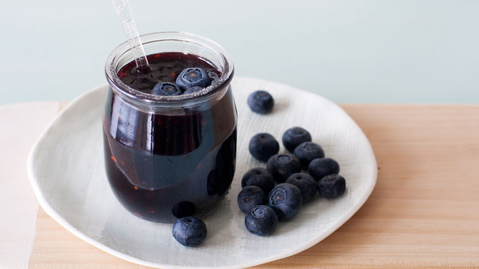

Easy Blueberry-Chipotle Glaze
Combining the tangy sweetness of blueberries and the spicy heat of chipotles, this glaze will add an exceptional flavor boost to any cut of meat.
Ingredients
- 1/3 cup blueberry preserves
- 2 tablespoons finely chopped chipotle chiles in adobo sauce (from 7-oz can)
- 2 tablespoons packed dark brown sugar
Recipe instructions
- In small bowl, mix all ingredients with whisk until well blended.
- Brush glaze over ham during last 45 minutes of baking.
Nutrition
Nutrition Facts are not available for this recipe